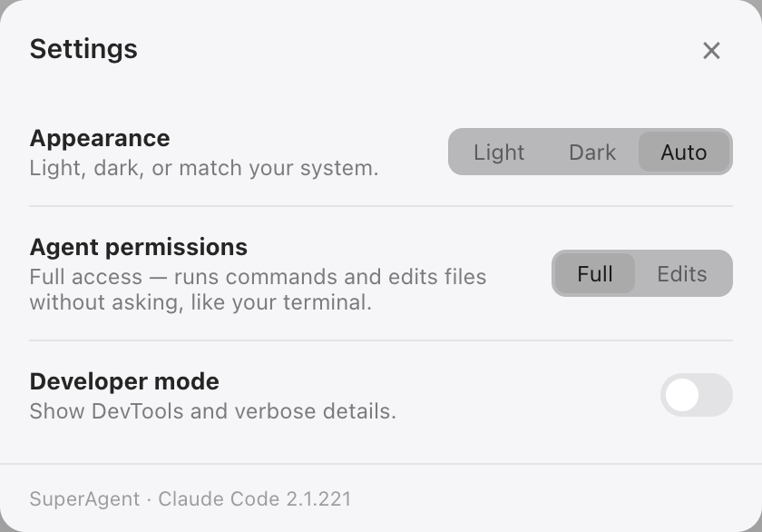

One chat per project, a real browser it can drive, an iPhone in the window, and routines that keep running. Local, on your own subscription.
notarized by apple · updates itself · nothing leaves your machine
The screen it gets
Claude drives the browser on your screen — the one with your sessions in it — and you watch. Ask for a change and the page reloads beside the chat, with your dev server running in a strip above the work.
Navigate, click, type, read back. Your logged-in session, not a headless copy of it.
The same live page in a desktop card and an iPhone frame, in one session.
An iOS Simulator streamed from its own framebuffer. Tap it, type into it.
Click any file to read it beside the tree; drag files in and annotate PDFs in place.
Backlog → done, moved by the agent as the work lands, per project.
A chat on its own git branch and directory. Your checkout stays clean.
How it behaves
It never steals focus: agents finish in the background and send a notification with what they actually said. Panes, open files and the active chat survive restarts and updates. Sessions wind down when idle, so nothing runs for the sake of running.
